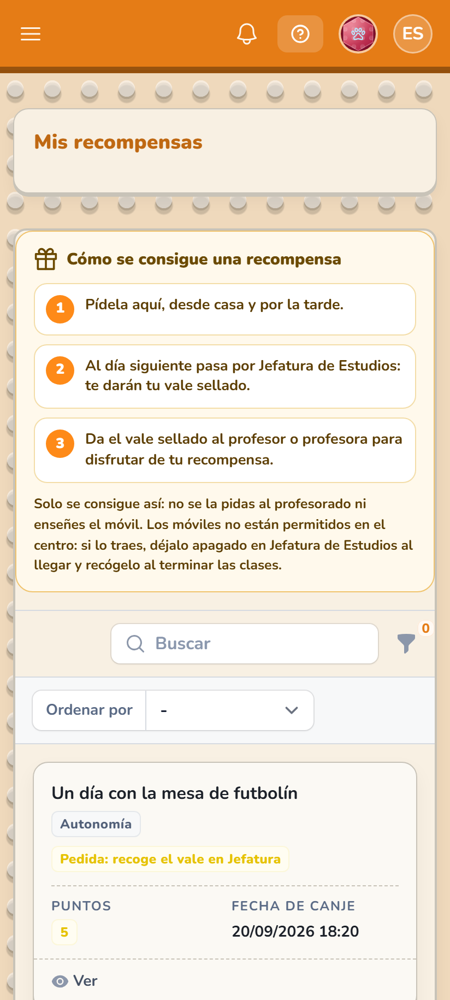

Puntos académicos
Solo los consigue el alumnadoLos gana vuestro hijo o vuestra hija con su trabajo. No se regalan, no se compran y no se gastan.
Al llegar a 50 puntos académicos, suman +1 en la nota final.Comunidad de Aprendizaje · IES Al-Ándalus
Cuando una familia entra en el instituto,
a sus hijos les cambia el curso.
En una Comunidad de Aprendizaje las familias no son visita: son parte. Entrar en un grupo interactivo, sentarse en una tertulia o venir a una comisión no es «ayudar al centro»: es enseñar, delante de vuestros hijos e hijas, que esto también es vuestro.
Y a partir de este curso, además, cuenta.
Lo primero, para no confundirlo
Cada uno tiene su moneda, y no se mezclan nunca.
Los gana vuestro hijo o vuestra hija con su trabajo. No se regalan, no se compran y no se gastan.
Al llegar a 50 puntos académicos, suman +1 en la nota final.Se ganan participando en las actuaciones del centro, y se los pasáis a vuestro hijo o hija con un código.
Sirven solo para canjear recompensas. No suben ninguna nota.Lo decimos claro porque es lo que más se malinterpreta: participar no le sube la nota a nadie. La nota se la gana el alumnado solo. Lo vuestro abre otra puerta distinta —la de las recompensas— y esa puerta solo la podéis abrir vosotros. Así el trato con el alumnado es más justo, y vuestra participación tiene un efecto real que se ve.

En tres pasos
Todo desde el móvil, en menos de un minuto.
Cada actuación dice de antemano cuánto dura y cuántos puntos da. Un grupo interactivo son 5; una comisión, 4; una tertulia, 3.

Elegís cuántos puntos le pasáis y la aplicación crea un vale con un código y un QR. No lleva nombres y es de un solo uso.


Con la cámara o escribiendo el código. Los puntos pasan a su cuenta al momento.

Y esto es lo que consigue
Cada recompensa dice cuántas veces tendría que participar un familiar para pagarla. Sin cuentas: lo pone la propia tarjeta.


| Recompensa | Puntos | Se consigue con |
|---|---|---|
| Elige la música del recreo | 3 | 1 tertulia |
| Diploma de reconocimiento | 4 | 1 comisión |
| Un día con la mesa de futbolín | 5 | 1 grupo interactivo |
| Dos mañanas en el huerto | 6 | 2 tertulias |
| Imprime tu modelo 3D | 8 | 1 grupo y 1 tertulia |
| Día sin deberes | 10 | 2 grupos interactivos |
| Delegado o delegada una semana | 12 | 1 grupo, 1 comisión y 1 tertulia |
| Elige tu sitio en clase una semana | 15 | 3 grupos interactivos |

Esto no está cerrado
Esta lista es el principio, no el final: irá creciendo según las necesidades que vayan surgiendo.
¿Se os ocurre una recompensa que tenga sentido? Escribidnos. Se estudiará y, si es apropiada y no plantea ningún problema, se verá cómo incluirla en la aplicación.
cda@iesalandalus.orgAún la estamos terminando. En cuanto esté lista os enviaremos el enlace de acceso y os explicaremos cómo identificaros, paso a paso.
Las pantallas de este mensaje son de la aplicación real: para que vayáis viendo cómo funcionará y de qué estamos hablando.